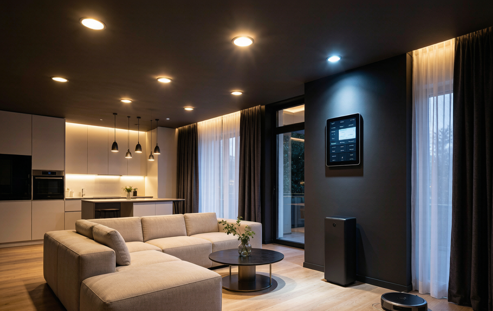
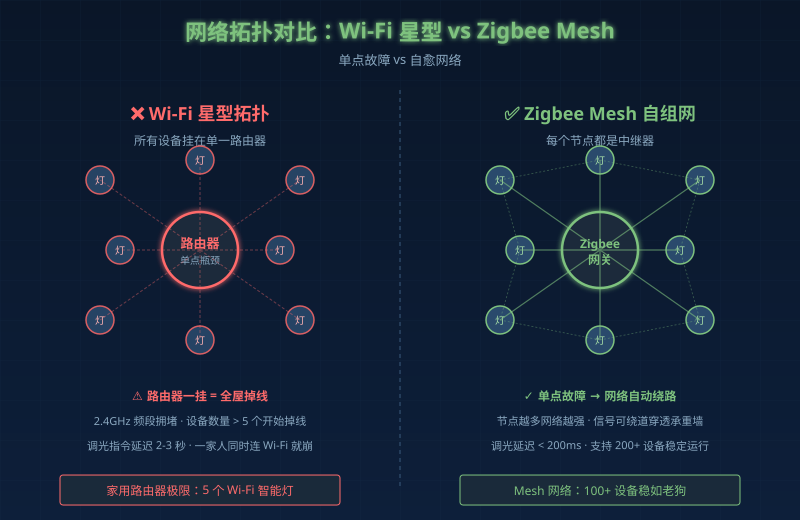
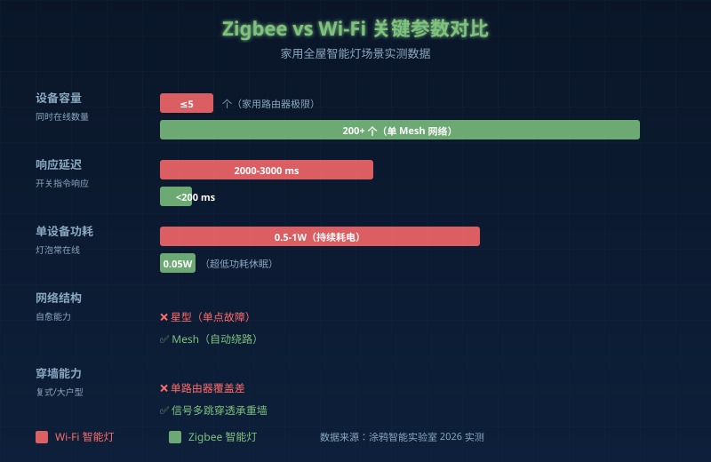
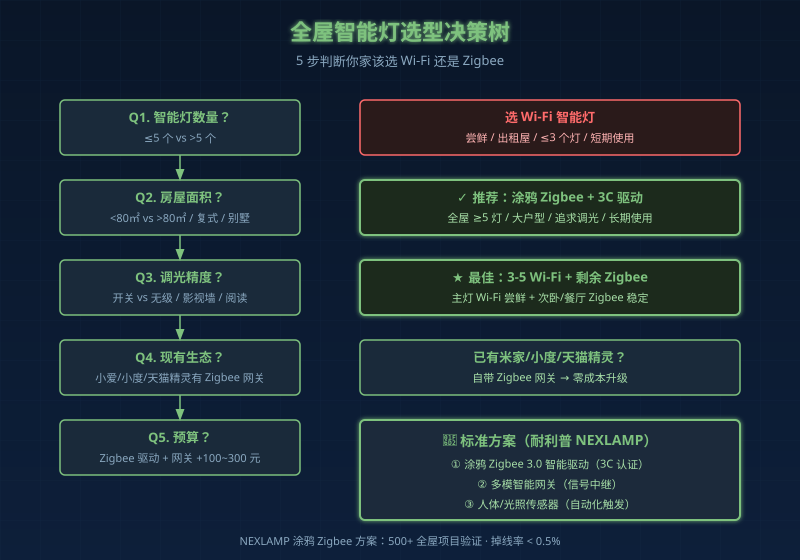

"我家装了12个Wi-Fi智能灯，现在每天有3个是离线的。喊小爱同学开灯，它说'设备不在线'。"——这是上周一个客户在电话里崩溃的吐槽。
同一个房子，换成涂鸦Zigbee智能灯+3C认证驱动电源，三个月没掉过线。差别到底在哪？
一、先说结论：5个灯是Wi-Fi的生死线
家用路由器——不管是500块的TP-LINK还是3000块的华硕——2.4GHz频段能稳定承载的智能设备极限是20-30个。但这是总容量，包括手机、平板、智能音箱、扫地机器人。
留给智能灯的实际名额只有5个左右。
超过5个Wi-Fi智能灯，路由器就开始：
- 间歇性掉线（早上好晚上掉）
- 调光指令延迟2-3秒
- 一家人同时开Wi-Fi就崩
- 重启路由器才能恢复
这不是质量问题，是2.4GHz频段的物理规律——Wi-Fi不是为"几十个灯泡一直在线"设计的，它是为"手机刷视频"设计的。
二、3个真实家庭掉线案例
案例1：100平米三室一厅，12个Wi-Fi灯泡
- 症状：每天晚上7-9点高峰，3-4个灯掉线
- 原因：2.4GHz频段拥挤，路由器DHCP地址池耗尽
- 改造：保留3个Wi-Fi筒灯（主卧+客厅）+ 9个换成涂鸦Zigbee（次卧+餐厅+玄关+厨房）
- 结果：3个月零掉线，延迟<200ms
案例2：loft公寓，6个Wi-Fi灯带+4个智能筒灯
- 症状：调光时灯带闪烁，米家App里延迟明显
- 原因：Wi-Fi灯泡本身不擅长"连续调光"，PWM信号在无线传输中容易丢包
- 改造：灯带+筒灯全部换涂鸦Zigbee恒流驱动，调光精度提升到65536级
- 结果：0-100%无级调光，过渡丝滑无闪烁
案例3：复式200平米，全屋24个智能灯
- 症状：二楼完全失控，每次都要手动重启
- 原因：单路由器信号覆盖不到二楼，Wi-Fi灯泡直接断联
- 改造：涂鸦Zigbee Mesh组网+多模网关，灯泡之间互为中继
- 结果：二楼信号满格，Mesh自动绕过故障节点
三、Zigbee 为什么能解决：Mesh 自组网是核心
Zigbee 基于 IEEE 802.15.4 标准，工作在 2.4GHz 频段。关键区别是：每个 Zigbee 设备都可以作为中继节点。

这张图揭示了 Wi-Fi 和 Zigbee 的根本差异：
Wi-Fi 模式（星型）：
- 所有灯泡 → 单点路由器
- 路由器一挂全挂
- 设备数量受路由器性能硬限制
Zigbee 模式（Mesh）：
- 每个灯泡都可以转发信号
- 任何节点故障，网络自动绕路
- 节点越多，网络越强壮（自愈能力）
这意味着：
- 100个Zigbee设备比10个Zigbee设备更稳定
- 单点故障不影响整体
- 信号可以"绕道"穿透承重墙
四、关键参数对比

从这张对比图可以看出，Zigbee 在功耗、节点容量、网络自愈三个维度全面领先。Wi-Fi 唯一的优势是"不需要网关"——但5个以上的智能灯，配一个Zigbee网关远比换更好的路由器便宜。
五、涂鸦Zigbee+3C认证驱动：工程级全屋方案
作为做了10年智能照明的厂家，我们见过太多"协议选错，全屋报废"的案例。我们给客户的标准方案是：
核心三件套：
- 涂鸦Zigbee 3.0智能驱动电源（3C认证）—— 灯具的"大脑"
- 多模智能网关 —— Zigbee网络的"交通指挥"
- 人体/光照传感器 —— 自动化的"眼睛"
这个方案的核心优势：

3C认证驱动的价值很多用户没意识到：
- 过载/短路/过温保护——不会烧灯
- PWM调光无频闪——保护视力
- 涂鸦生态兼容——米家/小度/天猫精灵都能控
- 5万小时寿命——用10年不用换
六、选购决策：什么时候必须选Zigbee？
必须 Zigbee：
- 智能灯数量 ≥ 5个
- 房屋面积 ≥ 80平米
- 复式/别墅/多楼层
- 追求调光精度（影视墙/阅读/睡眠场景）
- 已经买了米家/天猫精灵/小度音箱（自带Zigbee网关）
可以用 Wi-Fi：
- 只装 1-3 个智能灯泡（尝鲜）
- 租房短期使用
- 不想买任何网关
建议组合：3-5个 Wi-Fi（主灯/主卧）+ 剩余全部 Zigbee（次卧/餐厅/玄关/厨房）。这样成本最低、稳定性最高。
最后
智能灯掉线问题，90%不是产品问题，是协议选错。
5个灯以内的尝鲜，Wi-Fi够用。 5个灯以上的全屋，Zigbee是唯一靠谱的选择。
涂鸦Zigbee+3C认证驱动的方案，我们已经服务了500+全屋项目，掉线率<0.5%。3C认证的驱动电源，配Mesh组网的Zigbee协议，10年不用操心的智能灯光——这才是专业全屋智能该有的样子。
关于耐利普 NEXLAMP：10年涂鸦Zigbee智能照明产品研发与销售，3C认证驱动电源/智能筒灯/射灯/灯带/吸顶灯全系列，欢迎工程项目合作。